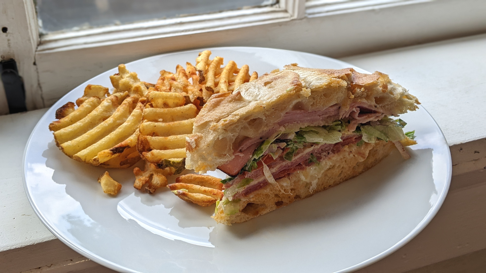
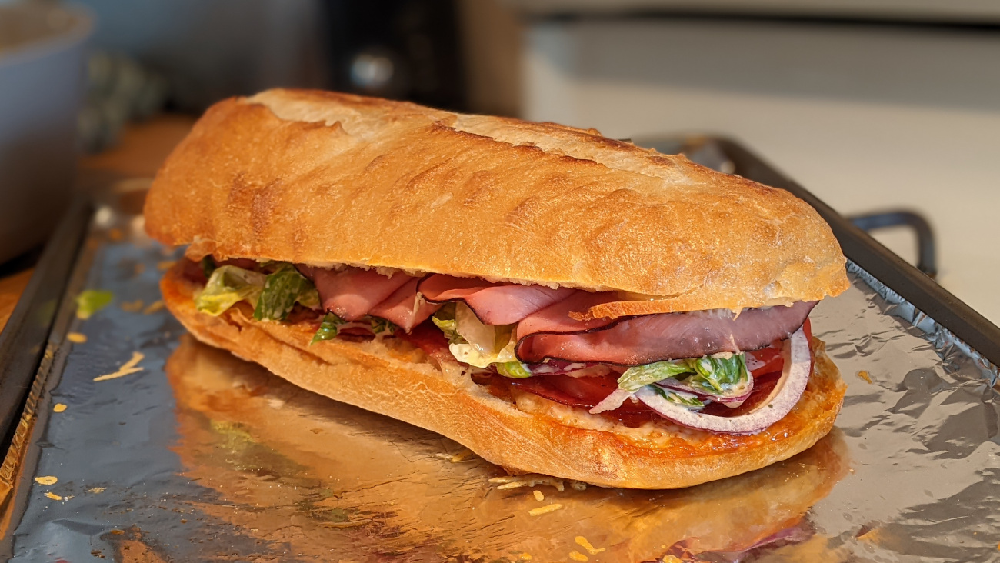

Italian Grinder

Author: Derek Nichols |
Cooked: April 30, 2022
Yields: 4 Servings | Prep Time: 10 Minutes | Cook Time: 15 Minutes
Ingredients
- 1/2 head of iceberg lettuce
- Thinly sliced red onion to taste
- 1 c. Duke's mayo
- 2 Tbs red wine vinegar
- 2 cloves minced garlic
- 1/4 tsp salt
- 1/2 tsp black pepper
- 1/4 tsp oregano
- Red pepper flakes to taste
- 1/2 c. banana peppers --------------------------
- Bread loaf
- Sliced provolone cheese
- Sliced pepperoni
- Sliced salami
- Sliced ham
- Shredded parmesan cheese
- Tomato
- Salt
- Black pepper
- Olive oil
Grinder Salad
Italian Grinder
Directions
- Cut head of lettuce into strips lengthwise, and thinly slice the red onion.
- In a bowl, combine mayo, vinegar, garlic, and spices and whisk together.
- Add in the lettuce, red onion, and banana peppers and combine. Add additional ingredients to taste. --------------------------
Grinder Salad
- Preheat oven to 375°F.
- Cut loaf of bread in half and dig out bread from top half leaving about 1/2" thickness left.
- Layer both sides with sliced provolone and bake for 6 minutes until cheese is bubbly.
- To bottom side of bread, add slices of pepperoni and salami laid flat. To the top side add slices of ham folded in half to give height. Cover both sides with shredded parmesan and cook for another 6 minutes or until the meats are cooked slightly and parmesan is melted.
- Add slices of tomato and top with salt, pepper, and drizzle of olive oil.
- Top with grinder salad, cut, and serve.
Italian Grinder

Additional Notes
- Diagonal cuts seemed to work best.